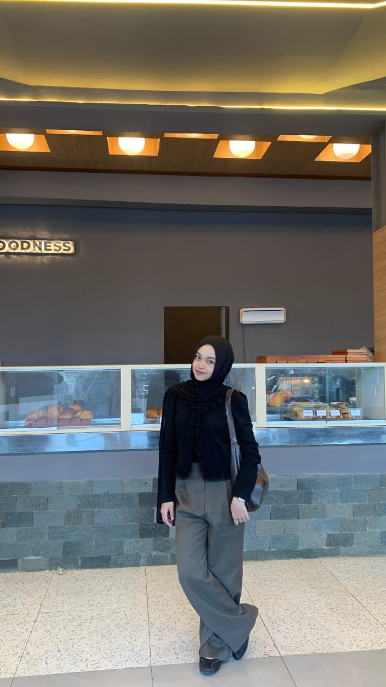

Saya adalah mahasiswa yang aktif di organisasi kampus dan memiliki minat mendalam dalam bidang manajemen, pengelolaan data, dan teknologi informasi.
Saya juga berpengalaman sebagai Manager Tim Futsal dalam mengatur jadwal, koordinasi tim, hingga manajemen event pertandingan secara profesional.